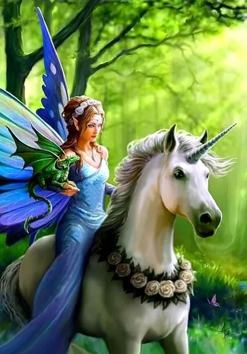

A fairy tale is a story, often intended for children, that features fanciful and wondrous characters such as elves, goblins, wizards, and even, but not necessarily, fairies. The term “fairy” tale seems to refer more to the fantastic and magical setting or magical influences within a story, rather than the presence of the character of a fairy within that story. Fairy tales are often traditional; many were passed down from story-teller to story-teller before being recorded in books.
| type of them | centries | real or fact |
| many but most of them are: angle | 18th and 19th | for chlidren real. |
Fairy tales are a type of folktale with several key characteristics: Magical Elements: They contain magical events, enchantments, and supernatural elements that are central to the story.
Imaginary beings: These stories often include mythical or fanciful beings such as fairies, goblins, witches, talking animals, and giants.

Fairy tales, in the literary sense, are easy to find. Look at your bookshelf or your DVD collection.You may see titles likes these: Snow White/ Cinderella/ Rip Van Winkle The Twelve Dancing Princesses /Rumpelstiltskin/Thumbelina
Fairy tales are important because they spark the imagination. They give us an outlet for experiencing things in our minds before we experience them in the real world. It is where the troubles of the real world can meet the supernatural and mix things up. In a fairy tale anything can happen and any kind of creature can exist, and when anything can happen, we can find solutions to things in our real lives. Through imagination, we learn about our world. We can explore outcomes and possibilities.